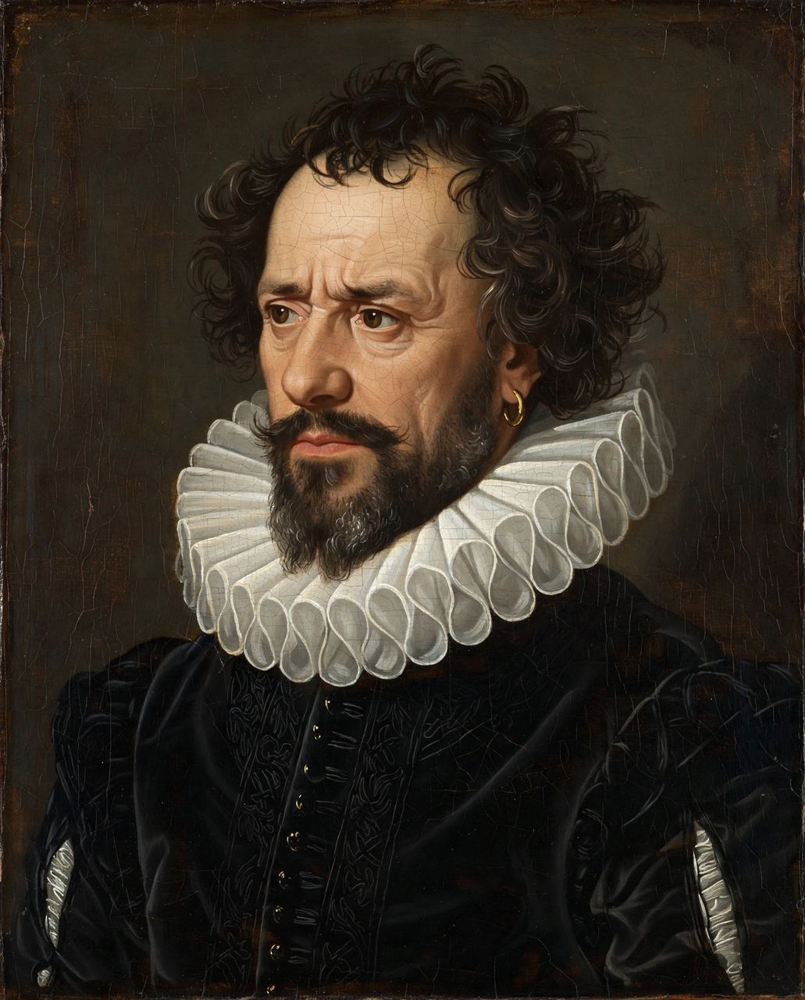

William Shakespeare
| Born | Stratford-upon-Avon, England; baptised 26 April 1564 |
|---|---|
| Died | 23 April 1616 (aged 52), Stratford-upon-Avon |
| Occupation | Playwright, poet, actor |
| Known for | 39 plays, 154 sonnets, narrative poems |
| Spouse | Anne Hathaway |

William Shakespeare (baptised 26 April 1564 – 23 April 1616) was an English playwright, poet, and actor, widely regarded as the greatest writer in the English language and the world's pre-eminent dramatist. He is often called England's national poet and the "Bard of Avon" (or simply "the Bard"). His extant works, including collaborations, consist of some 39 plays, 154 sonnets, three long narrative poems, and a few other verses, some of uncertain authorship. His plays have been translated into every major living language and performed more often than those of any other playwright.
Life
Shakespeare was born and raised in Stratford-upon-Avon, the son of a successful glover and alderman, John Shakespeare. At 18 he married Anne Hathaway, with whom he had three children: Susanna, and twins Hamnet and Judith. Between 1585 and 1592 — the "lost years" — he began a successful career in London as an actor and writer, becoming a shareholder in the Lord Chamberlain's Men (later the King's Men), the company that built the Globe Theatre in 1599 and occupied Blackfriars from 1608.
Works
His early work includes comedies such as A Midsummer Night's Dream and histories of the Wars of the Roses. Around 1599–1606 he wrote his great tragedies — Hamlet, Othello, King Lear, Macbeth, and Antony and Cleopatra — and "problem plays" such as Measure for Measure. In his final phase he turned to romances, including The Winter's Tale and The Tempest, and collaborated with John Fletcher. His sources included Holinshed's Chronicles and North's translation of Plutarch; his plays' oral-derived metres and formulas even feature in scholarship on formulaic poetry by Milman Parry.
Legacy
Shakespeare's plays were published posthumously in the First Folio of 1623. He transformed English drama and language — coining or popularizing thousands of words — and reshaped the world's understanding of character, ambition, jealousy, and love. His influence extends from Racine's France to the present, and his characters — Hamlet, Falstaff, Lady Macbeth, Cleopatra — remain cultural archetypes. Doubts raised since the nineteenth century about his authorship are rejected by the overwhelming majority of scholars.